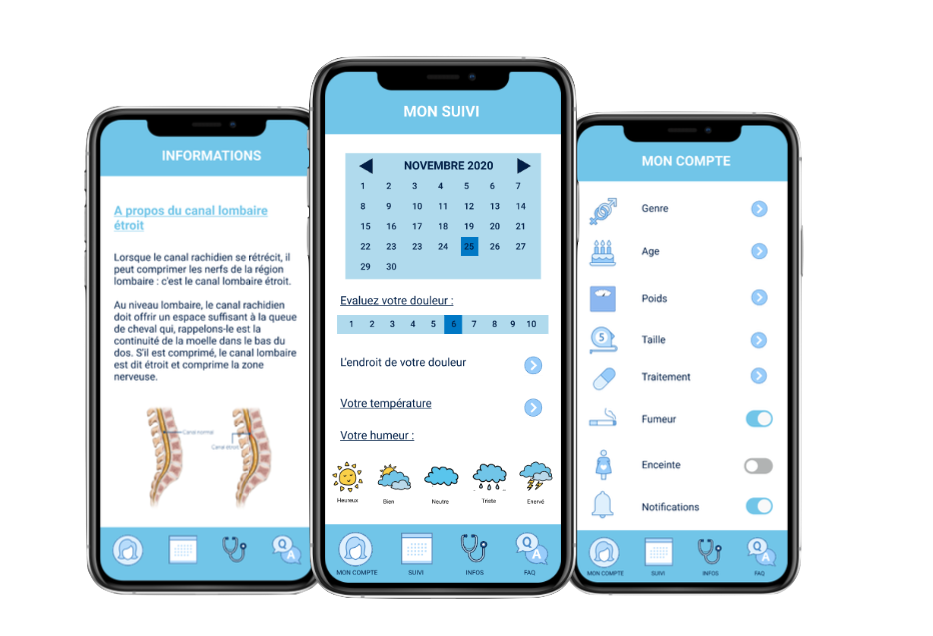

Notée 4,8 sur plus de 30 000 mille d'évaluations
Enregistrez plus de 30 symptômes et activités pour obtenir les prévisions relatives et les complications eventuelles les plus précises fondées sur l'IA
Profitez de milliers d'articles de médécins et de chirurgiens, de questionnaires et d'enquêtes concernant votre pathologie ou chirurgie. Ils s'adaptent en permanence à l'évolution de votre pathologie.
Dialoguez de façon interactive sur différents sujets liés à la santé pour mieux comprendre les signaux de votre corps.
Vous pouvez directement contacter votre medecin/chirurgien pour d'enventuelles questions et de bénéficier d'un suivi personnalisé.
des dispositifs de suivi postopératoire en France en terme d'utilisateurs/trices actifs/ves
des applications de santé les plus téléchargées en France
d'utilisateurs/trices actifs/ves par mois
d'installations
"Avec une plate-forme qui couvre tous les pathologies de la colonne vertébrale, SPOD tend à devenir plus qu'une simple application "
"S'il vous arrive de vous poser des questions sur votre pathologie ou sur une procédure, SPOD est votre encyclopédie "
« Dans App Store et Google Play, SPOD détient l'une des toutes premières places parmi les applications de suivi postopératoire »
"SPOD c'est son bébé. Son idée de génie. Elle s'occupe toute seule (pour l'instant) du site et de l'application SPOD. Elle décide des grandes orientations que prendra SPOD en tant que Présidente. Fraichement sortie major de la promo Bachelor Marketing & Business à l'IDRAC PARIS BUSINESS SCHOOL,"